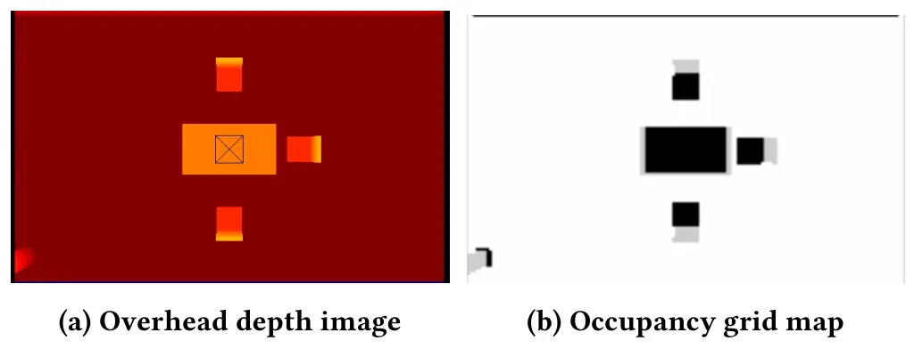
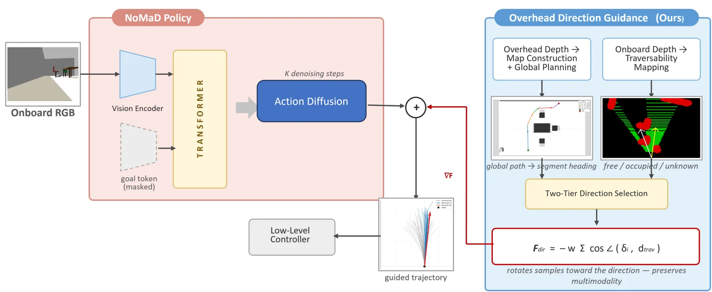
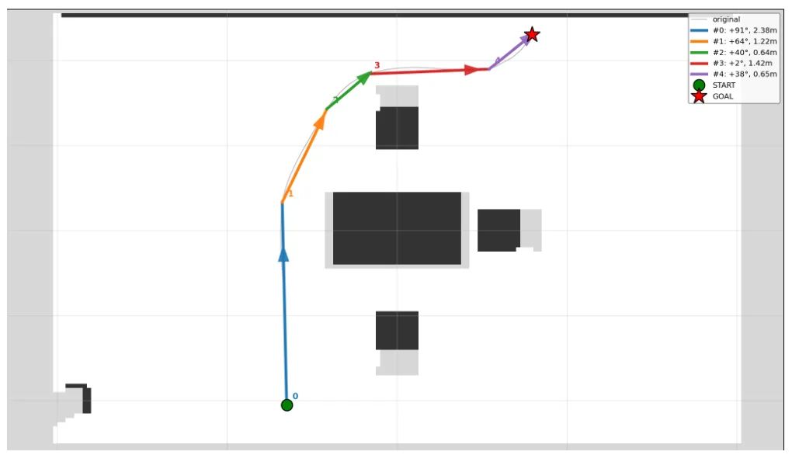
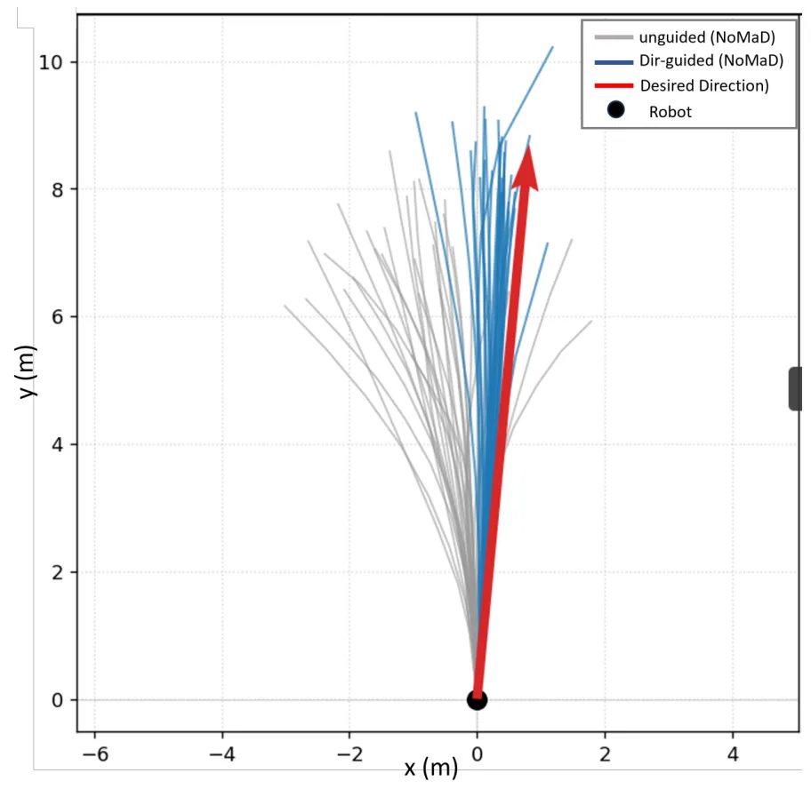
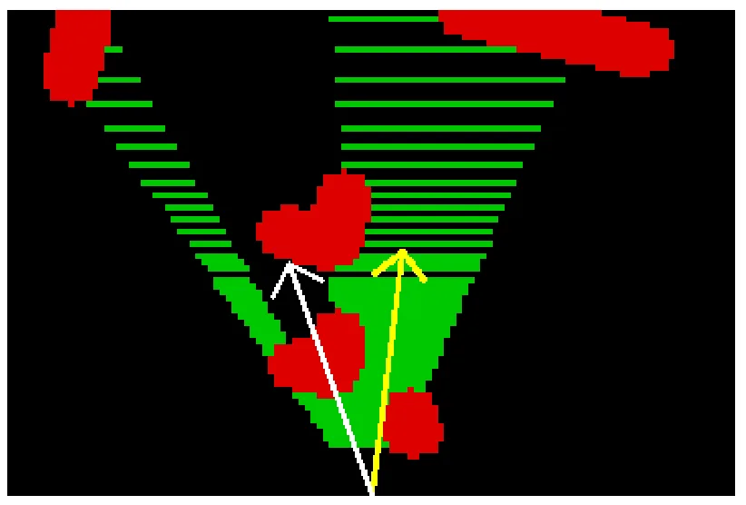
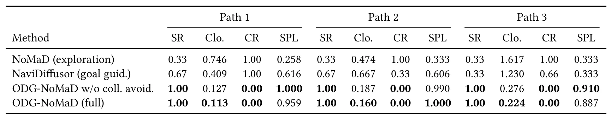
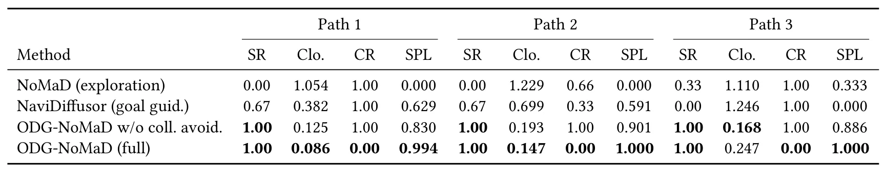

ODG-NoMaD：基于俯视相机方向引导的 NoMaDODG-NoMaD: Overhead-Camera Direction-Guided NoMaD
不是新的 SLAM 算法，但明确使用占据地图、全局路径和局部深度规划解决未知环境探索，和建图导航系统有较强工程交叉。
一句话工作总结
把一次性全局地图和局部深度可通行性约束注入扩散导航策略，对地图辅助探索、占据栅格和视觉导航耦合值得关注。
摘要
ODG-NoMaD 在部署时使用一次俯视深度相机构建占据栅格并规划全局路径，再从路径得到期望航向；机器人自身深度相机生成逐帧可通行性图进行避障细化。方向代价梯度被注入扩散策略最后几步，在保留探索多模态性的同时旋转采样轨迹。仿真中相对无引导探索显著降低到目标的剩余距离，并在测试中保持无碰撞。
NoMaD [31] is a learned vision-navigation policy that unifies goal-conditioned navigation and exploration in a single goal-masked diffusion policy. In an unseen environment, however - where neither a goal image nor a topological map is available - it can only explore undirectedly, wandering without global awareness. We present ODG-NoMaD, which gives NoMaD's exploration mode a global sense of where to proceed, without retraining the policy. An overhead depth camera is used once on deployment to build an occupancy map and plan a global path, which is segmented to yield a desired heading; a per-frame traversability map from the robot's onboard depth then refines this into a collision-free direction. The gradient of a cosine direction cost is injected into the final denoising steps, rotating sampled trajectories toward this direction while preserving the multimodality of exploration. In simulated office environments with and without random obstacles, ODG-NoMaD reduces the residual distance to the target by up to an order of magnitude over unguided exploration, outperforms the point-goal cost guidance of NaviDiffusor [37], and is the only configuration that remains collision-free on every trial.
中文解读摘录
- 中文名：RoboShape：面向隐私保护机器人感知的信息论点云表示
- 方向：点云表示、机器人感知、信息瓶颈、协同建图。
- 要点：在冻结 Sonata 编码器后加入信息论压缩头，同时保留目标理解信息并抑制敏感属性信息；报告嵌入体积缩小 87.5%、物体分类效用保留 98.7%，敏感属性预测下降 39.3%。
- 判断：对云端规划、协同建图和机器人感知数据传输有直接价值，但不是新的 SLAM 后端。
图表/页面预览

{kind=link}

{kind=link}

{kind=link}

{kind=link}

{kind=link}

{kind=link}

{kind=link}
